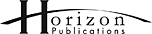

Home (Every daily newspaper in Canada) | Changes (including defunct papers)
| Owner (No. of papers) |
Chain | Newspapers
|
Web Portals & Verticals |
Chief Executive |
Stock Price | Advertisements |
|---|---|---|---|---|---|---|
| Postmedia Network Canada Corp. Toronto (36) |
Postmedia Network Inc. (36 English) |
|
Canada.com Canoe.com FPinfomart.ca Faceoff.com (with Torstar) Driving.ca Celebrating.ca Working.com Dose.ca Remembering.ca Your Life Moments Osprey Auction |
Paul Godfrey, president/CEO | Postmedia Network Canada Corp. (PNC-A.TO) (PNC-B.TO) |
|
| Torstar Toronto (10) |
Star Media Group (1 English) (Torstar also owns 19.35 per cent of Black Press Ltd. |
Thestar.com Torstar Syndication Services: - ESyndicate - Tsscontent.ca Toronto.com Workopolis (50%) |
John Boynton, president and CEO John A. Honderich is chairman |
Torstar Corp. (TSX:TS.B) | ||
Metroland Media Group (6 English) (Metroland Media is a wholly-owned subsidiary of Torstar.) |
GuelphMercuryTribune.com Wheels.ca Travelalerts.ca HomeFinder.ca LifeNews.ca LocalWork.ca GottaRent.com LeaseBusters.com (50%) Save.ca Goldbook.ca Torstar Printing Group |
|||||
Metro (5 English, 1 French) (Star Media Group owns 90 per cent and Metro International owns 10 per cent of Free Daily News Group (StarMetro Toronto, StarMetro Calgary and StarMetro Edmonton) and of Greenfield Newspapers (StarMetro Vancouver). Transcontinental, Torstar and Metro are co-owners of StarMetro Halifax.) |
ReadMetro | |||||
Sing Tao Newspaper Group (3 Chinese) (Star Media Group owns an approximate 55-per-cent interest in Sing Tao Newspapers (Canada 1988) Ltd.; Sing Tao's parent company in Hong Kong is Sing Tao News Corp. Ltd.) |
|
Dushi.ca Singtao.ca Ccue.com |
Carol Peddie, CEO, Toronto In Hong Kong, Siu Sai Wo is CEO and Charles Ho Tsu-Kwok is chairman |
Sing Tao News Corp. Ltd. is a publicly listed company in Hong Kong (HK:1105) |
||
| SaltWire Network Halifax (8) |
SaltWire Network (8 English) |
NovaNewsNow.com | Mark Lever is president and CEO | Privately owned by the Dennis and Lever family | ||
| Groupe Capitales Médias Québec (6) |
Groupe Capitales Médias (6 French) |
Claude Gagnon is CEO | Privately-owned by Martin Cauchon | |||
| Glacier Media Inc. Vancouver (5) |
Glacier Newspaper Group (2 English) (Glacier Ventures also bought a 25 per cent interest in Continental Newspapers Ltd. in November 2006 and acquired an increased interest in 2008.) |
Jonathon Kennedy, president and CEO Sam Grippo is chairman |
Glacier Media Inc. (TSX:GVC) | |||
|
Alta Newspaper Group LP (3 English) |
Privately owned by Glacier Ventures (59 per cent) and a private group of shareholders including David Radler. | |||||
| Quebecor Montreal (3) |
Québecor Groupe Média (3 French; Quebecor Media has also bought a 50 per cent stake in Today Daily News) |
Canoë Jobboom employment Autonet ReseauContact Qubecor Media Sales |
Pierre Karl Péladeau, president and CEO Pierre Dion is chairperson of the Quebecor Media board; Julie Tremblay is president and CEO of Quebecor Media Group |
Quebecor Inc. TSX:QBR.A TSX:QBR.B |
||
| J. D. Irving Saint John, N.B. (3) |
Brunswick News (3 English) |
Canadaeast.com CareerBeacon.com |
James K. Irving, chairman and CEO | Privately owned by the Irving family. | ||
| Black Press Victoria (3) |
Black Press (3 English) |
LocalWorkBC.ca Used.ca B.C. Local News |
David Black, president/CEO | Black Press Ltd. is a company privately owned and operated by the David Black family, in which Torstar Corp. has a 19.35-per-cent interest. | ||
| Horizon Marion, Ill. (3) |
 Continental Newspapers Ltd. (formerly Horizon Operations (Canada) Ltd.) (3 English) |
David Radler is CEO | Privately owned by David Radler and possibly Mark Kipnis and others. Conrad Black sold his shares in 2006. Glacier Ventures bought a 25 per cent interest in Continental Newspapers Ltd. in November 2006 and acquired an increased interest in 2008. | |||
| FP Newspapers Winnipeg (2) |
FP Newspapers (2 English) |
Ron Stern, chairman and CEO | FP Newspapers Income Fund (TSX:FP.UN) | |||
| Epoch Times Media New York (2) |
Epoch Times (2 Chinese) |
|
Cindy Gu is Eastern Canada president | The Epoch Times is a privately held news media company. | ||
| Media Chinese International Ltd. Hong Kong (2) |
Ming Pao (2 Chinese) |
|
Tan Sri Datuk Tiong Hiew King, chairman | Media Chinese International Ltd. is a publicly listed company in Hong Kong (HK:00685) |
||
| Korea Times Co. Ltd. Seoul, South Korea (2) |
HanKook Daily News (2 Korean) |
|
Lee Chang-sup, CEO | |||
| JoongAng Ilbo Media Network Seoul, South Korea (2) |
Korea Daily (2 Korean) |
|
Song Pil-ho, president and CEO | |||
| Power Montreal (1) |
Gesca (1 French) (Gesca also owns 15 per cent of Montreal Métro.) |
Nécrologie Workopolis (50%) |
Paul Desmarais Jr., chairman and co-CEO André Desmarais is president and co-CEO |
Power Corp. of Canada (TSX:POW) | ||
| Metro International Stockholm, Sweden (1) |
Metro (1 French) (Star Media Group owns 90 per cent and Metro International owns 10 per cent of Free Daily News Group (StarMetro Toronto, StarMetro Calgary and StarMetro Edmonton) and of Greenfield Newspapers (StarMetro Vancouver). Publications Métropolitaines Inc. (Montreal Métro) is owned by Transcontinental Media (60 per cent), Metro International (25 per cent) and Gesca (15 per cent). Transcontinental, Torstar and Metro are co-owners of StarMetro Halifax.) |
ReadMetro | Leif Eliasson, CEO | Metro International SA was delisted from the Nasdaq OMX - Stockholm in May 2012 after the public offer by Investment AB Kinnevik (Kinnevik). Currently more than 98 per cent of the shares in Metro International are held by Kinnevik. | ||
| Transcontinental Montreal (0) |
Transcontinental Media (0 English) (Transcontinental Media is also 60-per-cent owner of Montreal Métro, which is for sale and co-owner (33 per cent share) of Metro Halifax.) |
InMemoriam.ca LesAffaires.com Publisac.ca coupons and flyers MesNouvellesLocales.com Info07 Les Éditions Transcontinental Atlantic NewsNet |
François Olivier, president and CEO Isabelle Marcoux is chair of the board |
Transcontinental Inc. TSX:TCL.A TSX:TCL.B |
The Woodbridge Co. Ltd. is not included in this table because it only owns one newspaper, the Globe and Mail although it does also own the Thomson Reuters news service. Power Corp. owns only one newspaper, but it is also a part-owner of Montreal Métro, as is Transcontinental, which also owns several weeklies.
Likewise, many of the other independent dailies also publish weekly newspapers, but only chains with two or more dailies are listed in this table.
Home (Every daily newspaper in Canada) | Changes (including defunct papers)